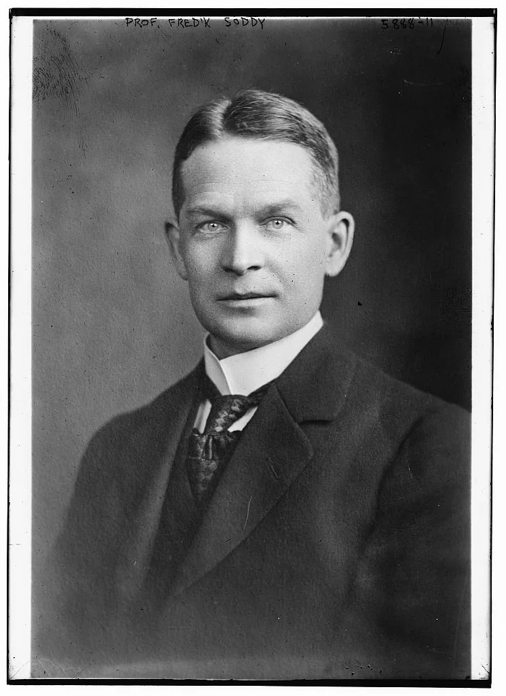
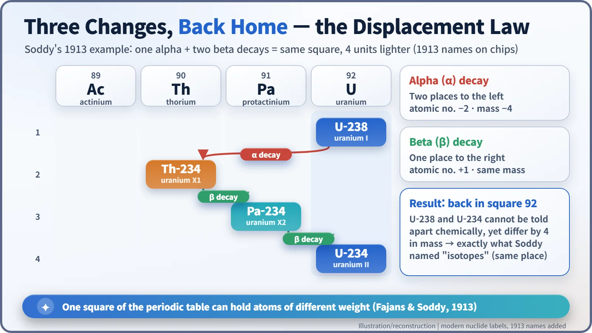
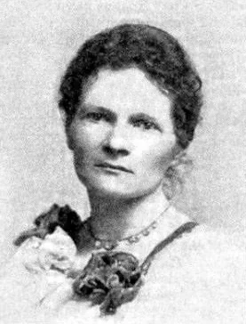
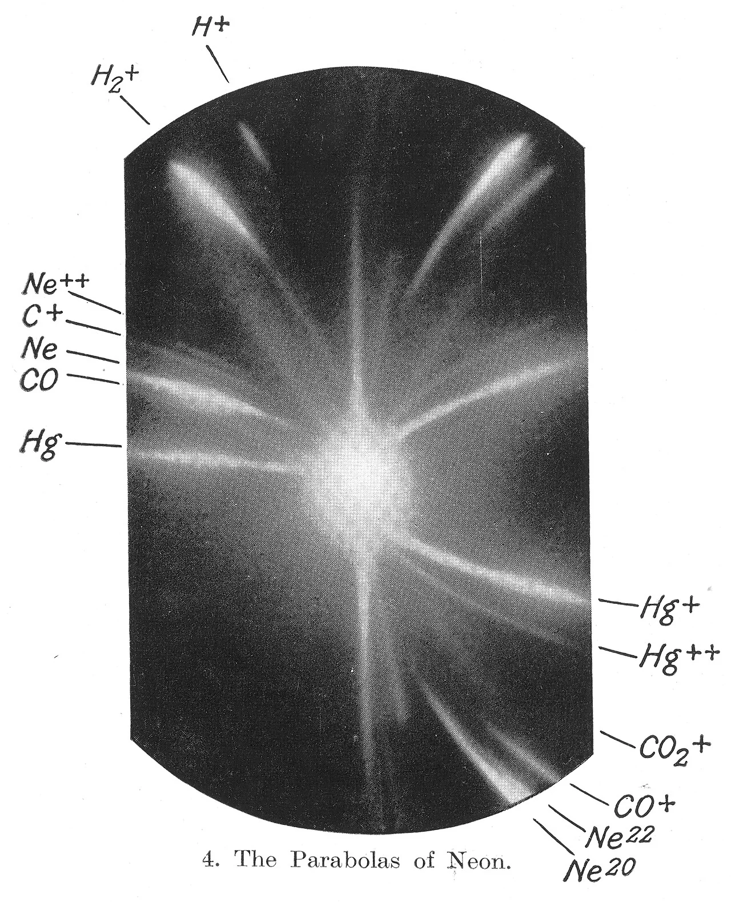
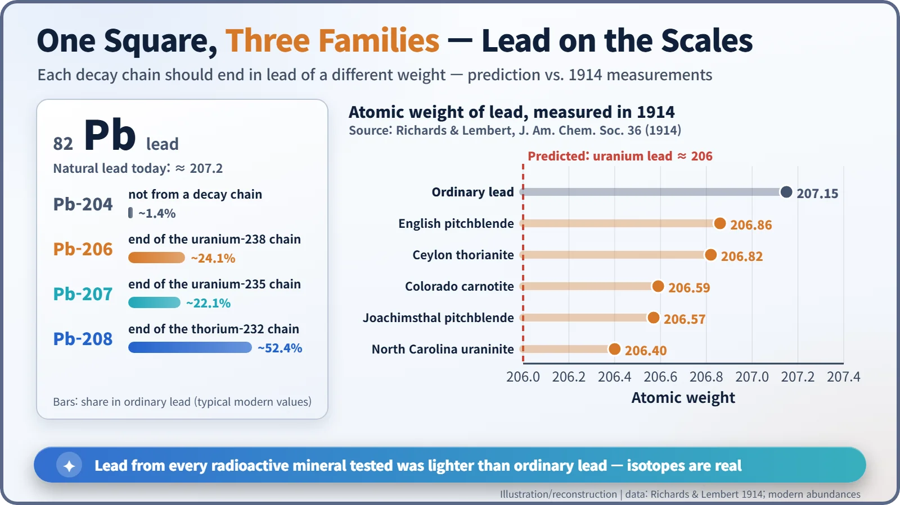

Nuclear History · 029
Same Place, Different Weight — How Soddy's "Isotope" Was Born (1913)
Dozens of radioactive substances, eleven slots in the periodic table, and one new word: atoms that share the same place but not the same weight.
By 1913, radioactivity research had crammed dozens of new "elements" into a periodic table with only eleven free slots. Frederick Soddy and Kazimierz Fajans found the rule that solved the puzzle, and on 4 December 1913 Soddy gave the answer a name suggested by a novelist-doctor, Margaret Todd: isotopes, atoms that share the same place but not the same weight.
A parking problem on the periodic table
Read any news story about nuclear power and you will soon meet "uranium-235" and "uranium-238". Both are uranium, yet they carry different numbers. The word that ties them together is isotope. What few people know is that the word was not coined by a physicist or a chemist at all, but by a Scottish doctor who also wrote novels.
In the early 1900s, radioactivity research was producing new "elements" at an alarming rate. Each substance along the decay chains of uranium and thorium had its own half-life, so each got its own name: uranium X, ionium, mesothorium, thorium X and many more. By 1913 there were dozens of these "radioelements" between uranium and lead, but the periodic table had only 11 slots in that stretch. Dozens of cars, eleven parking spaces. [4]
Stranger still, some of them refused to be separated. Frederick Soddy (1877–1956), then a lecturer at the University of Glasgow, showed in 1910 that once mesothorium, radium and thorium X were mixed, no chemical method could pull them apart again. Their radioactivity was clearly different, yet chemically they behaved like identical twins. [4]

Two steps left, one step right
The key came early in 1913. Soddy and the Polish-born chemist Kazimierz Fajans (1887–1975) arrived, independently and at almost the same time, at the same rule, now called the radioactive displacement law: [3]
- Emit an alpha particle (a helium nucleus) and the atom moves two places to the left in the periodic table, and its mass drops by 4.
- Emit a beta particle (an electron) and it moves one place to the right, with its mass almost unchanged.
Follow the rule and something remarkable falls out. One alpha decay plus two beta decays brings an atom back to its original square, only 4 units lighter. The answer to the parking problem was that several cars could share one space.

4 December 1913: a name for "the same place"
On 4 December 1913, Soddy published a short letter in Nature titled "Intra-atomic Charge". In it he described elements that are chemically identical but differ in mass, and wrote that they make up "what I call 'isotopes' or 'isotopic elements,' because they occupy the same place in the periodic table." The word joins the Greek isos ("equal" or "same") and topos ("place"). [1]
In the same letter he estimated that the positive charge on the uranium nucleus was "about 90". The true atomic number is 92, so he was not far off.
The novelist-doctor who found the word
The word itself, however, was not Soddy's own. It was suggested to him around 1913 by Margaret Todd (1859–1918), a family friend, according to an account later given by Soddy's former student Alexander Fleck. Todd was one of the early women doctors trained at the Edinburgh School of Medicine for Women, and under the pen name "Graham Travers" she was also a successful novelist. A charming scene is often told in which she coined the word at a dinner at the home of Soddy's father-in-law, after listening to him explain his research. It makes a good story, but no first-hand record of that dinner has been confirmed. [5] [6]

Neon, and a set of scales
The same year, a similar signal turned up in Cambridge, far from radioactivity. J. J. Thomson was recording beams of positively charged atoms on photographic plates and saw that ordinary neon left two traces, at masses of about 20 and about 22. Thomson did not declare these to be isotopes; he also considered other explanations. The question was settled in 1919 by his assistant Francis Aston, using a new instrument. [4]

The decisive test came from a balance. If the displacement law was right, lead at the end of the uranium chain should weigh about 206, and lead from the thorium chain about 208. In 1914 T. W. Richards and M. E. Lembert at Harvard measured lead from several minerals. Ordinary lead came out at 207.15, but lead from North Carolina uraninite came out at just 206.40. In their words, "all of the radioactive specimens possess a lower atomic weight than ordinary lead." Chemically identical lead weighed differently depending on where it came from. [2]

| Source of the lead (1914) | Atomic weight |
|---|---|
| Ordinary lead | 207.15 |
| English pitchblende | 206.86 |
| Ceylon thorianite | 206.82 |
| Colorado carnotite | 206.59 |
| Joachimsthal pitchblende | 206.57 |
| North Carolina uraninite | 206.40 |
The "why" arrived 19 years later
Soddy himself did not know why isotopes differ in weight. Like most of his contemporaries, he thought the nucleus contained electrons alongside its positive charge. The real answer came only with the discovery of the neutron in 1932: isotopes have the same number of protons, which fixes their chemistry, and different numbers of neutrons, which changes their mass.
Soddy received the 1921 Nobel Prize in Chemistry, presented in 1922, "for his contributions to our knowledge of the chemistry of radioactive substances, and his investigations into the origin and nature of isotopes." Today, enriching uranium-235 from about 0.72% of natural uranium to the 3–5% used in most power-reactor fuel, carbon-14 dating and medical radioisotopes all rest on that simple idea: same place, different weight. [7]